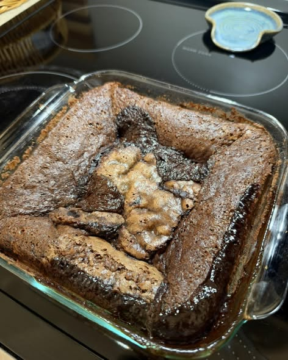
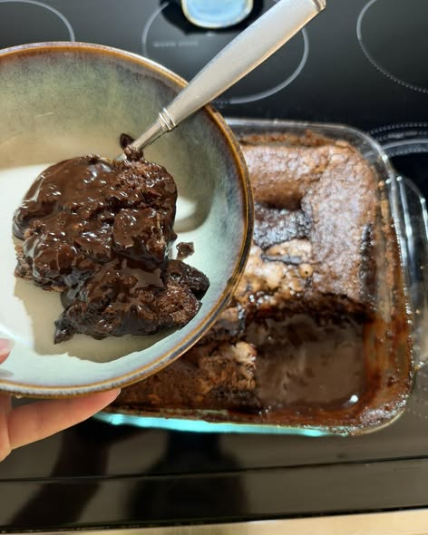
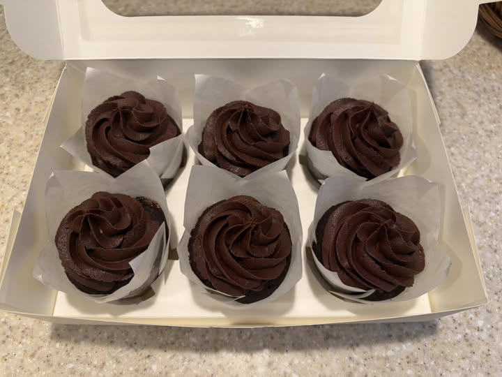
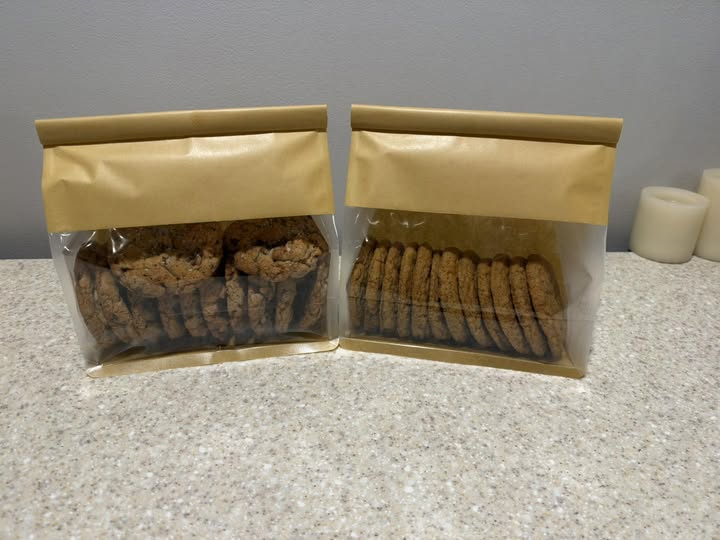

A RECENT BAKE01 / WARM & CHOCOLATEY
Fresh from the oven
A new chocolate-rich bake shared from Mariah’s kitchen. Ask what this week’s bake is called and whether it’s available.
Ask Mariah about itA licensed home bakery in Wiscasset
Small-batch bakes, family recipes and custom orders, made with love by Mariah in Maine.

FROM MARIAH’S KITCHEN
A peek at recent bakes. The selection changes, so send Mariah a message to check what’s available or talk through a custom order.

A RECENT BAKEA new chocolate-rich bake shared from Mariah’s kitchen. Ask what this week’s bake is called and whether it’s available.
Ask Mariah about it
DOUBLE CHOCOLATE CUPCAKESChocolate on chocolate, made for sharing. Custom cake and cupcake requests are discussed directly with Mariah.
Ask about a custom order
SMALL-BATCH COOKIESKitchen-sink cookies and other cookie bakes have appeared in recent posts. Message to see what’s on the counter now.
Check this week’s selectionPhotos show recent public posts. Availability, sizes, pickup details and pricing are confirmed directly with the bakery.
CUSTOM ORDERS, MADE PERSONAL
Some orders start with a flavor, others with a reference photo or a celebration. Share your idea and work out the date, pickup and pricing together.
Start a conversationTell Mariah what you have in mind.
Confirm what’s possible, along with the date and pickup.
Pricing is discussed directly before an order is set.
A NOTE FROM WISCASSET
Mariah grew up around family bakers and carries those familiar recipes into Flour Child Bakery. Today, she makes small-batch bakes from her licensed home bakery in Wiscasset, Maine.
Meet Flour Child on FacebookMade in Wiscasset
with family recipes
and a little curiosity.
READY WHEN YOU ARE
Ask about the latest bakes or tell Mariah what you’d love for a special day.
Message Flour Child Bakery